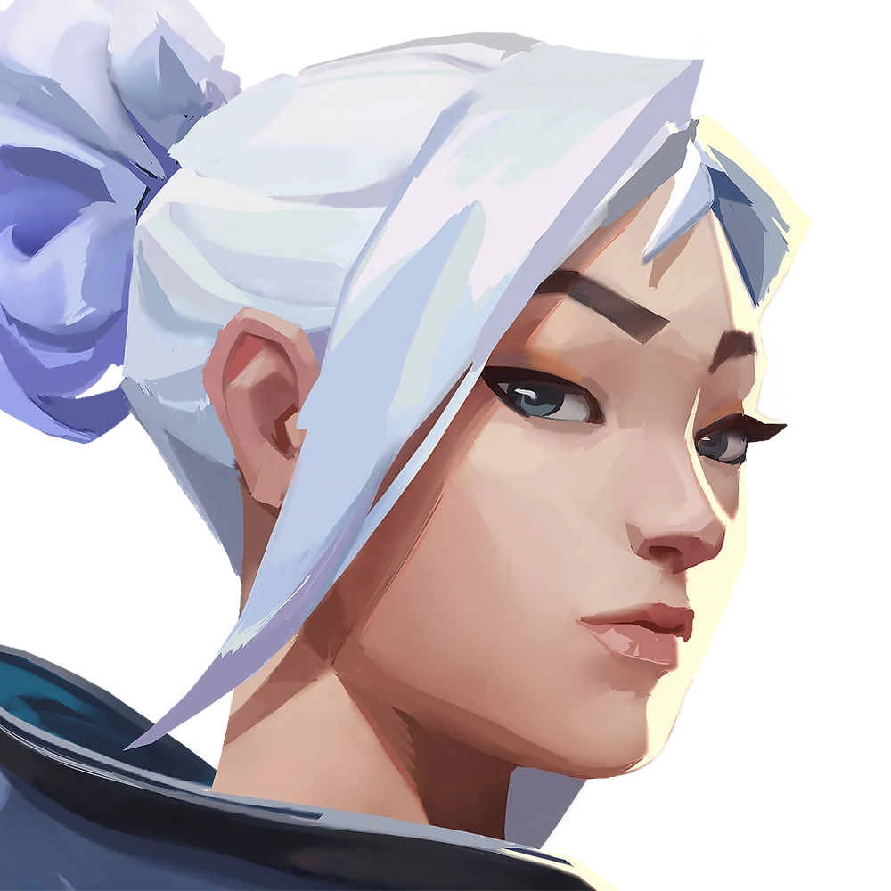
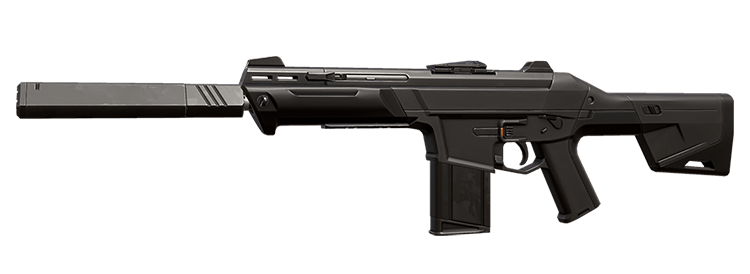
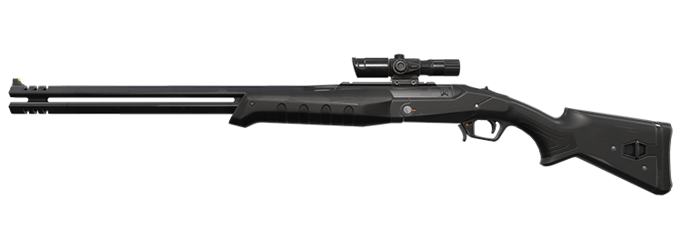
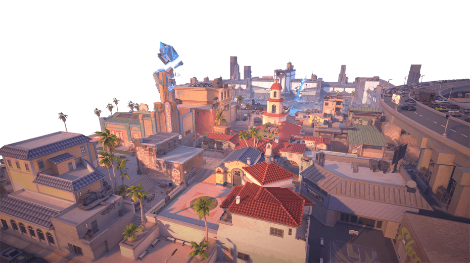
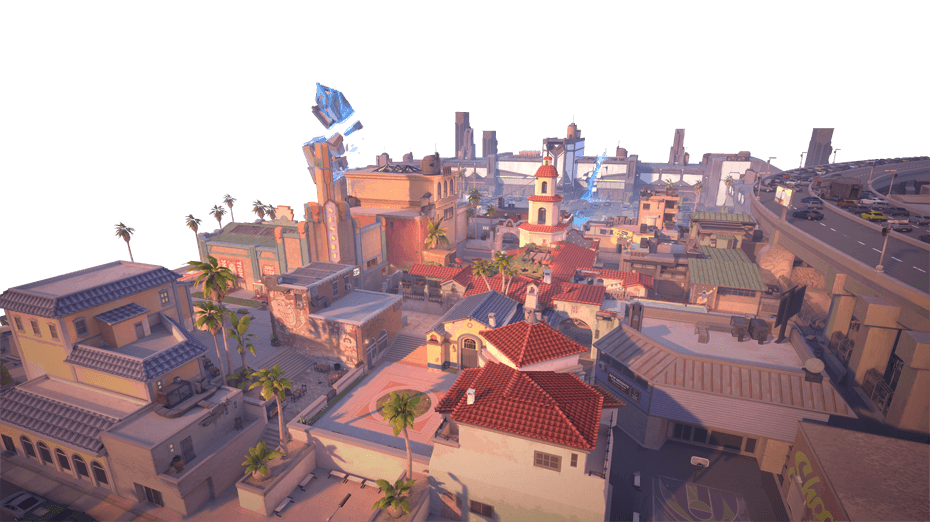

Valorant is a first-person shooter video game that was released in 2020, developed by Riot Games (League of Legends, Teamfight Tactics). It adheres to a format similar to that set by the Counter-Strike games.
To download VALORANT, click on this link
For beginners, the most important aspects to note are the game mechanics, the gameplay and the skills required to play the game.
GAMEPLAY
The objective of the game is to defeat the enemy team by engaging in strategic team fights across various game modes.
There are a few different game modes that Valorant offers. The different game modes change either the objective of the game or the length of the average game.
The attack and defence style of gameplay is the game’s standard game mode. It consists of two teams of 5 players each.
In this game mode, the players first choose characters, which all have different abilities which can affect the end result of the game in different ways. The players are then loaded onto a random map within a rotating map pool, which each consists of a few sites. Each team is assigned either an attacking or defending role. The first team to win 13 rounds wins this game mode. In this mode, there are halves of 12 rounds each, and in between the halves, the attacking team switches to defending and vice versa. Each round begins with a buy phase, in which players can purchase guns and abilities.
The primary objective of a round for the defending team is to plant the spike (a type of bomb) at the designated site on the map within a certain time frame and defend the spike until its detonation, or eliminate all members of the opposing attacking team. For the attacking team, their primary objective is to prevent the defending team from planting by stalling for time (eliminating the defending team or denying access to the site), or defusing the spike after it’s been planted.
This mode has two streams from which players can choose to compete from; Unrated and Competitive. The unrated game mode is recommended for beginners and casual players as it is a low stakes game with no consequences on the player’s rank. The competitive game mode is a higher stakes version of the attack and defence game mode, with losses and wins incrementally augmenting a score called RR (Rank Rating), which defines the player’s rank. This mode differs from the unrated mode in that in order to win, you must defeat the opposing team by 2 rounds, similar to rules of badminton. This means that competitive games can draw on for longer than unrated games, if neither team can secure the advantage to win.
Other games modes:
There is also a Swift Play game mode which was introduced recently for players looking for a game of shorter length. Instead of the standard 13 rounds to victory, the requirement to win is reduced to 5 rounds, with each half consisting of 4 rounds each instead of 12. This is a quicker game for those who want to warm up before heading into a longer game mode or have a limited amount of time available.
The Spike Rush is another game mode which offers a shortened gameplay for players. In this mode, the first team to win 4 rounds wins the game, and the halves are 3 rounds each. What differentiates Spike Rush from the similar Swift Play mode is the fact that each player on the attacking team is given a spike instead of a single spike that the team must plant, and players are given guns and full charges of their abilities, instead of having to manually purchase them. There are also orbs on the map which offer advantages to teammates or disadvantages to the opposing team.
The Deathmatch gamemode changes the objective of the game completely. It is a free-for-all mode of 12 players with abilities locked and the choice of any weapon in the game. It is simply a mode devoted to gunplay. The first player to reach 40 kills wins the game, and each kill spawns a health pack where the deceased opponent died.
GAME MECHANICS
AGENTS
The agent the player selects is their avatar for the game. Each agent has 4 different abilities.
Agents are grouped into four roles; duelists, controllers, initiators, and sentinels.
| Duelists |
|---|
| Duelists are characters who specialise in playing aggressively in order to secure kills. Their abilities are often self-sufficient and assist only themselves in getting kills. |
| Controllers |
|---|
| Controllers are characters whose abilities allow them to manipulate the map. This includes temporary walls and orbs which block the vision across the map, and help create space. This is one of the tougher roles in the game as haphazardly using abilities may create a disadvantage for the player’s team instead. |
| Initiators |
|---|
| Initiators are characters whose abilities assist them in garnering information and assisting their team. This includes flushing out the opposing team with cameras or flashes (which distort the enemy’s vision for a moment) or having a familiar animal of some kind which is sent into the fray to get intel |
| Sentinels |
|---|
| Finally, the Sentinel characters are those with abilities which are about holding down a site and ensuring that the opposition does not sneak up on them. They all have an ability to place down an object which will alert them if the enemy walks past it, or if the enemy destroys it. This is a slower role which can take some time to get used to, but it is integral to a team’s success. |
There are three types of abilities that agents possess. These are the basic, signature and ultimate abilities.
Basic abilities are bought during the buy phase of the round. Most agents possess two basic abilities, however there is variation amongst some agents.
Signature abilities automatically reload at the beginning of each round. Some agents may be able to purchase additional charges of this ability during the buy phase. Some signature abilities may recharge with time, or with kills.
Ultimate abilities are the strongest in the game, and cannot be purchased. Instead, every kill, death, defuse or plant will give the player one ultimate charge. The full charge to use an Ultimate ability varies amongst agents, with it ranging from 6 charges to 9 charges.
Agents in the game
| Agent | Agent Name | Role | Abilities[1] |
|---|---|---|---|
| Brimstone | Controller |
|
|
| Viper | Controller |
|
|
| Omen | Controller |
|
|
| Killjoy | Sentinel |
|
|
| Cypher | Sentinel |
|
|
| Sova | Initiator |
|
|
| Sage | Sentinel |
|
|
| Phoenix | Duelist |
|
|
|  | Jett | Duelist |
|
| Reyna | Duelist |
|
|
| Raze | Duelist |
|
|
| Breach | Initiator |
|
|
| Skye | Initiator |
|
|
| Yoru | Duelist |
|
|
| Astra | Controller |
|
|
| KAY/O | Initiator |
|
|
| Chamber | Sentinel |
|
|
| Neon | Duelist |
|
|
| Fade | Initiator |
|
|
| Harbor | Controller |
|
|
| Deadlock | Sentinel |
|
|
| Gekko | Initiator |
|
|
| Iso | Duelist |
|
|
| Clove | Controller |
|
[1] Information in the abilities column has been directly sourced from the official Valorant website.
Agents (n.d) VALORANT. Available at: https://playvalorant.com/en-us/agents/ (Accessed: 06 April 2024).
A consideration to the outcome of the game might be the team composition with regards to roles. Within the team, discuss how many of each role should be utilised and what each player is comfortable with to ensure team harmony. If there is a variety of abilities available for the team’s use, then more can be done to control the outcome of the game. Controversially, players could utilise a 5-duelist composition, which would allow for each player to be self-sufficient and individually hunt for kills.
WEAPONS
Within Valorant, each player has access to three weapon slots at all times. One of these slots will contain a melee weapon, such as a knife or sword, which can be used in close combat of unsuspecting opponents. The second slot is used to store the sidearm weapon. The third slot stores your primary weapon.
The first slot will always be available. However, the melee weapon is rarely used. This is due to the effectiveness of the guns compared to the melee weapon.
The second slot will hold a classic gun free of charge. However, purchase of another sidearm will overtake the complimentary gun’s position.
The third slot will contain the primary gun, which can only be purchased after the third round due to credit constraints.
There are guns for every type of situation. Part of the game is deciding which gun to purchase, based on your current economic status, and other factors. Try testing each gun out when first starting out to get a feel for their uses.
Here is a list of the different guns within the game and their classes.
| MELEE |
|---|

Tactical Knife |
| SIDEARMS |
|---|

Classic |

Shorty |

Frenzy |

Ghost |
| SMGS |
|---|

Stinger |

Spectre |
| SHOTGUNS |
|---|

Bucky |

Judge |
| RIFLES |
|---|

Bulldog |

Guardian |
|

Phantom |

Vandal |
| SNIPER RIFLES |
|---|

Marshal |
|

Outlaw |

Operator |
| MACHINE GUNS |
|---|

Ares |

Odin |
MAPS
There are currently 10 maps in VALORANT which are available in all of the game modes discussed above. Each has its quirks, which offer a different challenge and obstacles to play around. This could include a map with 2 spike sites, or a map with 3 spike sites. Some maps are larger than others, and others have more corners to play off of.
Part of mastering the game is knowing the maps, and familiarising yourself with your environment around you. That way you can know where to expect your enemies, and gain the upper hand in combat.
Here are a bird’s eye view of the maps:


 


STORE
In VALORANT, at the start of every round is a buy phase. During this phase, the two teams are blocked off from each other, and players are able to purchase weapons, abilities and shields by accessing the store (by pressing [B] on the keyboard).
During the first round, players will receive 800 credits. This is enough to purchase a sidearm, or light shields. Light shields cost 500 credits and heavy shields cost 1000 credits. The cost of abilities and guns vary.
It is important to utilise this store with regard to the amount of credits the player possesses at the time. Winning a round awards 3000 credits, and staying alive until the ends of round adds an additional 1000 credits. Losing a round only gives 1900 credits, and subsequent rounds lost will pay 2400 and 2900 to make up for credit disparities. Killing opponents will give you 200 credits each. Therefore, it is important for all players to keep an eye on the amount of credits that is possessed at any given time.
Strategy suggestions:
If the team does not possess enough credits to purchase a good gun and shields, and the enemy team has enough, considering conserving credits until the next round, to build up enough to purchase both a gun and shields.
If your team has the economic advantage over the opponent, consider full buying and using most of your credits to buy a good gun and shields. This way you will possess the edge over the enemy team.
You can purchase weapons for your teammates. If you have an excess of credits, consider purchasing a gun for a broke teammate. Conversely, if you are poor on credits, beg your teammates for a buy.
SKILLS
Here are a few of the most integral skills in VALORANT. You will learn these naturally over time, with time put into the game, but it is good to know what skills you are building as you build them.
AIM
Aim is one of the most important skills in VALORANT, and similarly with other first player shooter games. If you have played other FPS games in the past, you will be able to transfer these skills to VALORANT.
When shooting with a gun, you should point your crosshair at the head of the opponent, as that is where they will take the most damage. It is also preferable to tap with the gun when possible, instead of spraying bullets, as with the spray, bullets will no longer be accurate to the crosshair. Your aim will be one of the factors which decide whether you win or lose a round. If you are “out-aimed” by an opponent, you may lose your life as your bullets miss their body.
Aim is a skill that will naturally develop with time. However, there are 3rd party apps which can help you improve your aim. If you are finding your aim not improving that quickly, or you want to specifically train your aim, try downloading ‘AimLabs’, which contains exercises to improve your aim.
AGENT MASTERY
When first starting out with VALORANT, you should try playing all of the agents in order to figure out which play-style suits you the best. You can read the descriptions of the abilities each agent possesses above in the Agents section.
After playing for some time, it is important to form some sort of agent mastery. This means knowing clearly how your agent of choice’s skills work, when to use them, and applying this knowledge to the game. This way, your gameplay will be refined and consistent and your use of abilities can support your aim for optimal gameplay.
One of the worst things in the game is not using your agent’s abilities. At that point, you could be considered to be play Counter-Strike, which is a phrase coined by the community as the game Counter-Strike is essentially VALORANT without abilities. Try to keep your abilities in mind during each round.
COMMUNICATION
Communication is integral to VALORANT as a team game. The key bind [V] will allow you to transmit your voice to your team.
When you possess important information, remember to relay this information to your team. This can be whether you hear foreign gunshots or footsteps, which alert you and your team to their location, or after your death, tell your team where the opponent which killed you was positioned.
One of the hardest ways to play the game is with a silent team, as this can result in delayed reactions and preventable accidents.
GAMESENSE
Game sense is having the intuitive knowledge to gain the upper edge against opponents.
Here are some examples, and ways to improve your game sense:
Positional awareness
Knowing the map you are on can help you to predict where enemies can come from, and where they are most likely to be. Having your teammate tell you information can help you to deduce this.
Adapting to your opponent’s habits
Notice your opponent hitting one site way too often? Try concentrating your forces into that site and catch your opponent off guard. Observe what your opponents are consistently doing, and use that repetitive behaviour to teach them a lesson.
Watch pro players
Professional VALORANT e-sport players are the height of experience and skill in the game. By watching their plays, you can understand more behind the thought processes behind each of their decisions, and how to make this spur of the moment decisions in real time.
CONCLUSION
Most of this information here is important to know as a VALORANT player, but don’t stress if you can’t apply it all at once in your first few games. These are skills which are naturally acquired throughout the experience of playing, but it is important to recognise these skills.
At the end of the day, VALORANT is a game. The main objective is to have fun. Don’t feel too stressed about understanding everything, and find the enjoyment in playing!